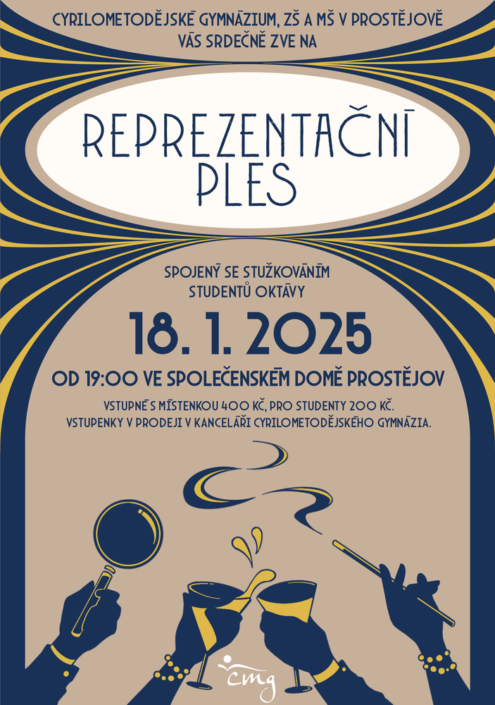
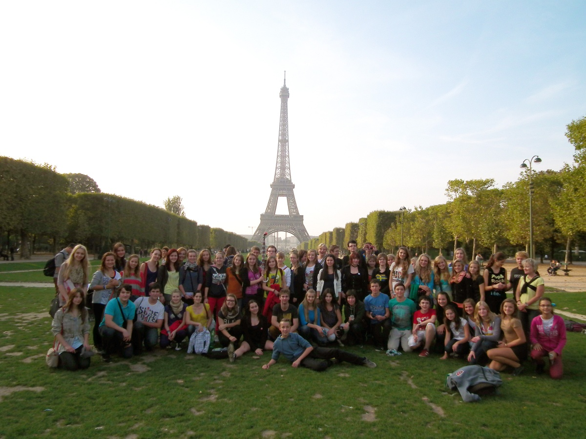
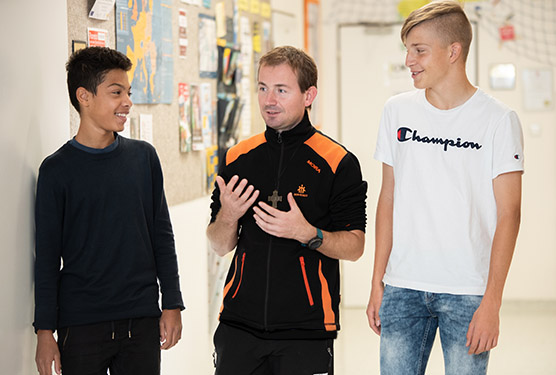

Naše gymnízium vzniklo 24. ledna 1992, ale vlastní budovu na adrese Komenského 17 škola získala a začala plně využívat po rekonstrukcích v roce 1998 (oficiálně převzala prostory v červenci 1998).
Cyrilometodějské gymnázium, základní škola a mateřská škola v Prostějově (CMG) je církevní osmileté gymnázium, 2. stupeň základní školy a mateřská škola pro děti všech rodičů, kterým záleží na kvalitním vzdělání a křesťanské výchově jejich dětí.
Zážitky z naší školy:



Pošlu dítě na vaši školu
0
Nepošlu dítě na vaši školu
0